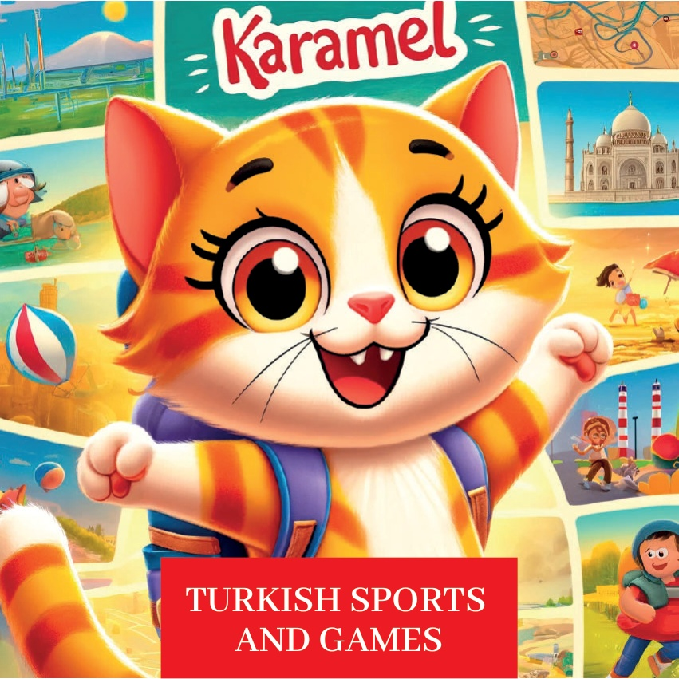
1

2

3
Жылі-былі сямейкі, і ў іх была цікавая маленькая котка на імгненне – Карамель. Карамель вельмі хацела гуляць і заўсёды была ў руху. Аднаго дня Карамель адправілася ў падарожжа па Туркii, каб знайсці традыцыйныя і сучасныя спартыўныя гульні, якія любяць людзі розных узростаў.
4
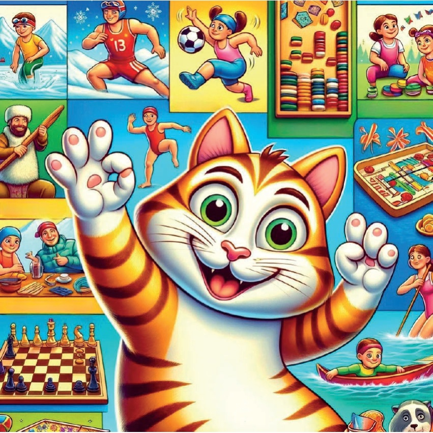
5
Мармарайскі раён - Істанбул: Першым прыпыркам Мармарайскай Карамелі быў Істанбул, дзе яна бачыла, як дзеці гуляюць у футбол на вуліцах. Яна далучилася да іх і даведалася пра ахвоту Тюрэччыны да гэтых гульняў, асабліва пра ўплыўны ахвоту за вялікімі матчамі на стадыёне.
6
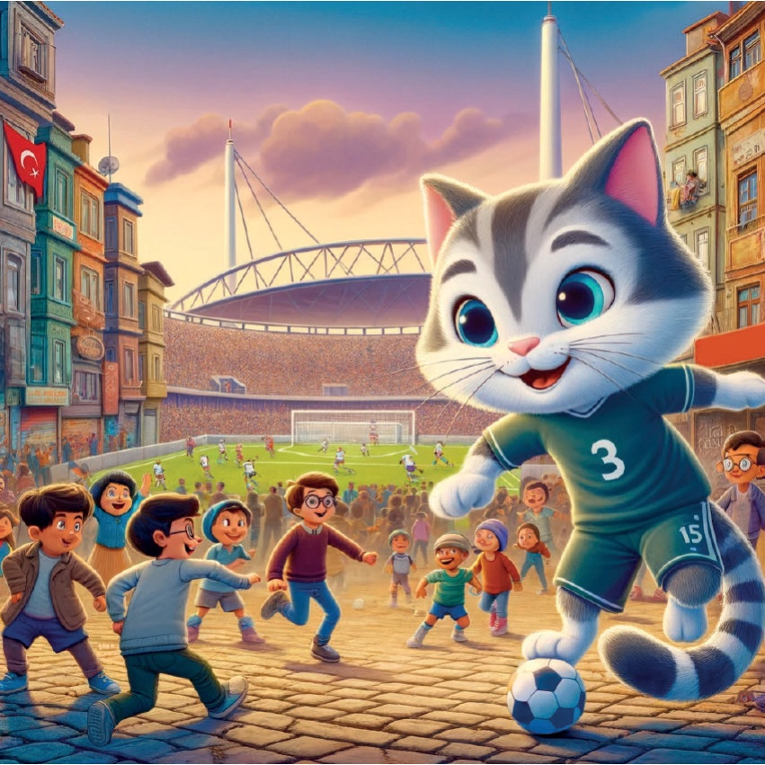
7
Aegean Region - Ізмір: Далі - Баскембон.
Карамель адправілася ў Ізмір. Там яна знайшла людзей, якія гулялі ў баскембон у прымірных кафэ. Яна вывучыла правілы гэтай цікавай гульні і задаволілася дружасьце спаборніцтвам.
8
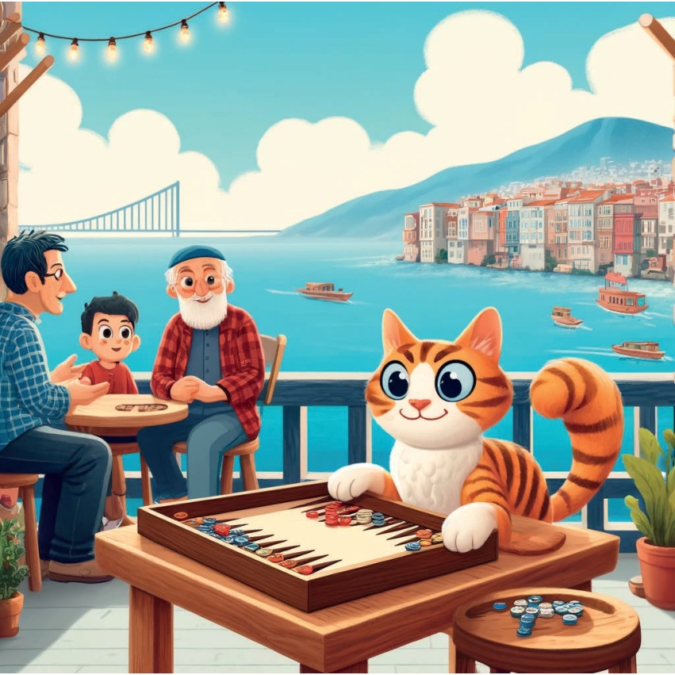
9
**Аланья, Мідіяні:**.
У Аланья Карамэль разам з сябрамі пачала атрымліваць асалоду ад плавання. Яна правела цэлы дзень на пляжы, плаваўшы ў чыстых водах і даведалася пра прыгожыя папулярныя курорты Турцыі.
10
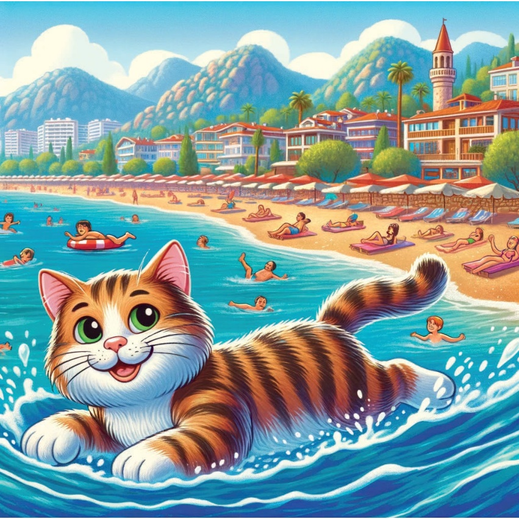
11
Конья, Центральная Анатолия – Кулачная Борьба в Масле.
В Конье, Карамель увидела традиционную борьбу в масле. Она наблюдала за тем, как борцы соревнуются силой и ловкостью, узнавая об истории и важности этого древнего вида спорта.
12
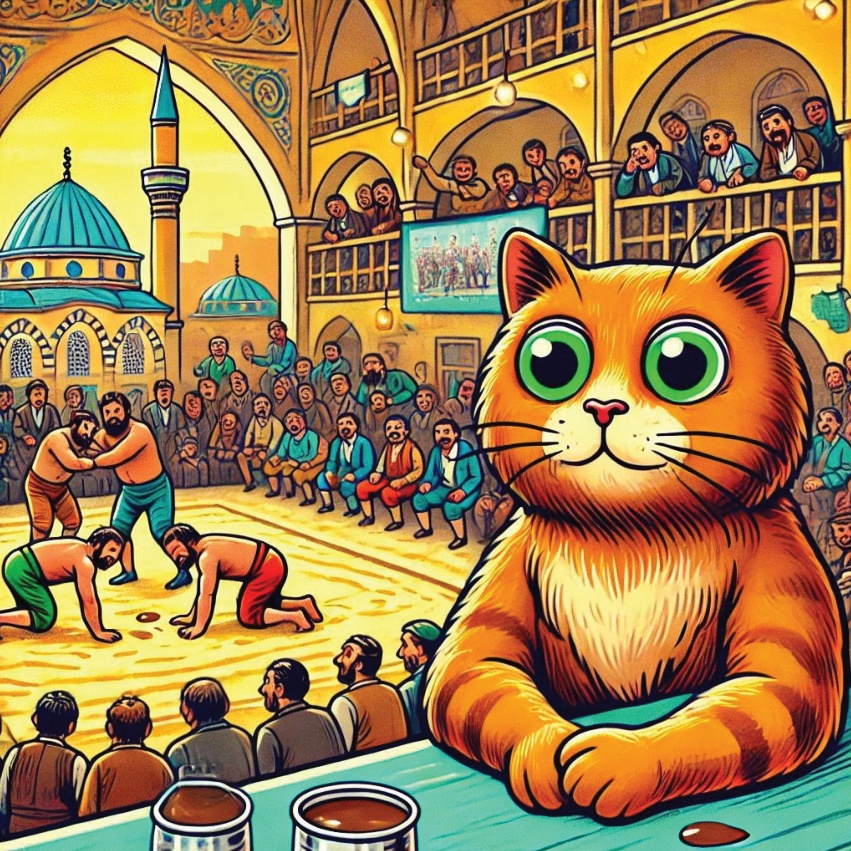
13
Чорнаморскі раён - Рыза: Карамель з гуртом "Хорон" адправілася ў Рызу. Там яна бачыла, як людзі танцуюць танцы хорон. Яна далучилася да вельмі жывага танца, вывучаючы крокі і атрымліваючы задавальненне ад традыцыйнай музыкі.
14
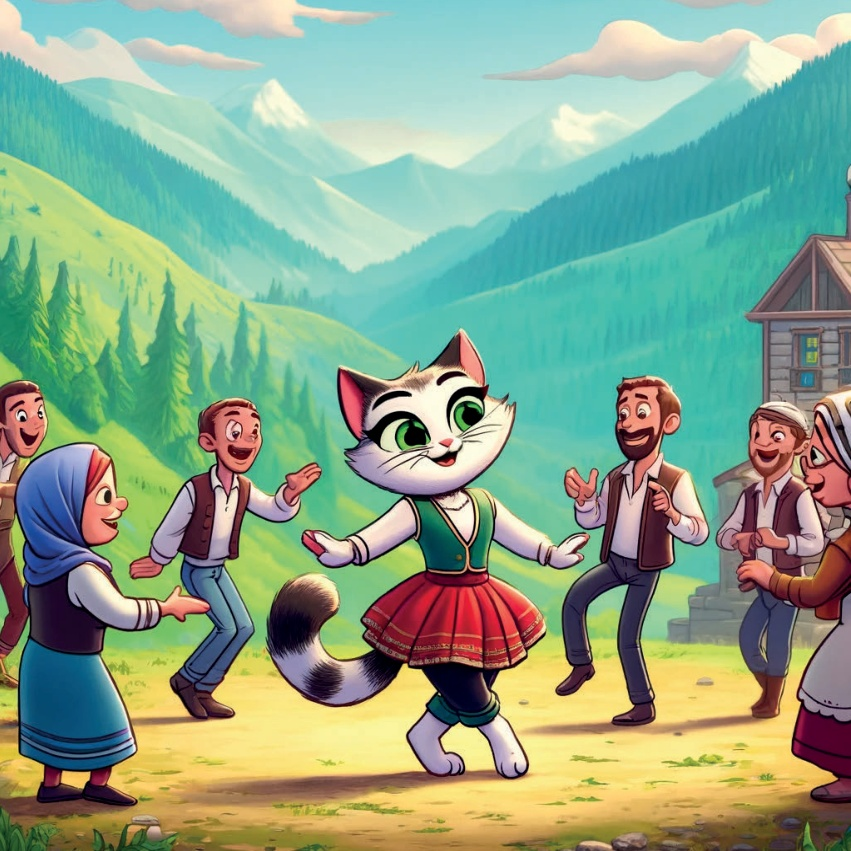
15
Erzurum, Ανατολική Ανατολία: Лыжние приключения в Эрзуруме.
В Эрзуруме, маленькая Карамэль впервые попробовала кататься на лыжах. Она долго смотрела, как лыжники скользят по заснеженным склонам горы Паландёкен. И даже сама попробовала покататься на лыжах!
16
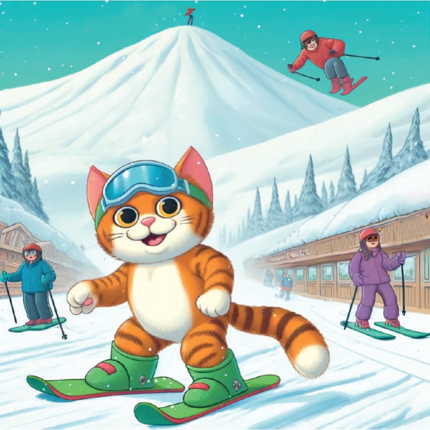
17
Донбас - Газіантеп:
Напаломнілася карамеल्या далёкай га並касці, і прыбыла ў Газіантеп. Там яна бачыла, як сям'і гуляюць у традыцыйныя настольныя гульні, напрыклад, у манглу. Яна даведалася пра тактыку гэтай гульні і задаволілася дружалюбным спаборніцтвам.
18
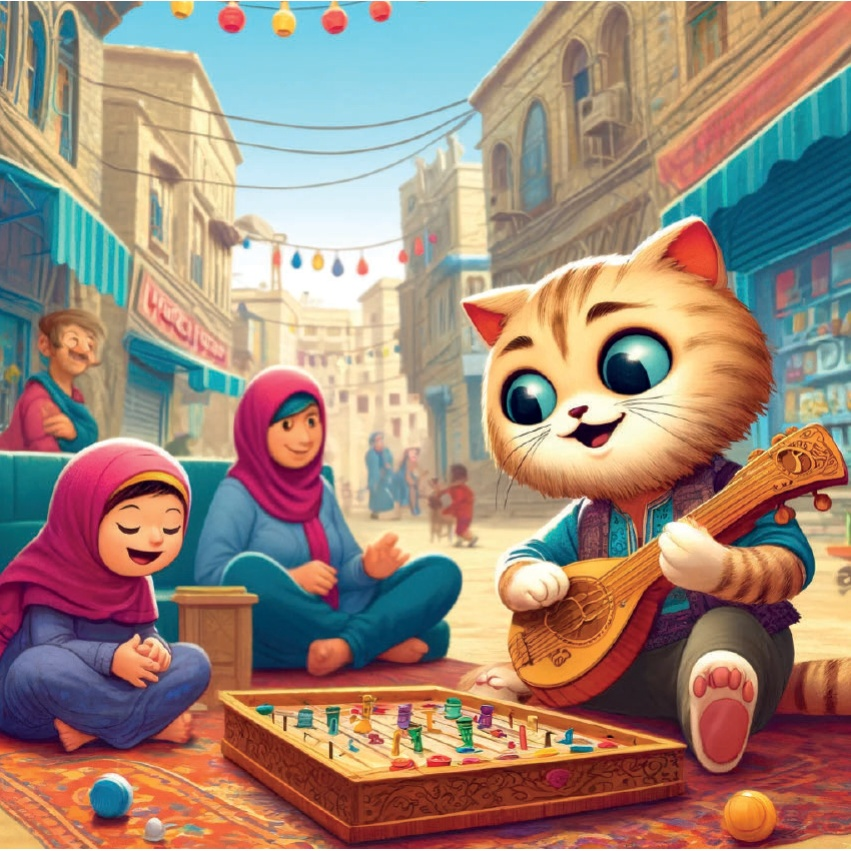
19
З радасцю ў сэрцы і весяליмі ўспамінамі ў галове, Карамель зразумела, што сапраўднымі дараготай Турцыі з'яўляюцца яе розныя спартыўныя гульні. Яна вярнулася дадому, марыць аб сваёй наступнай прыгодзе.
20
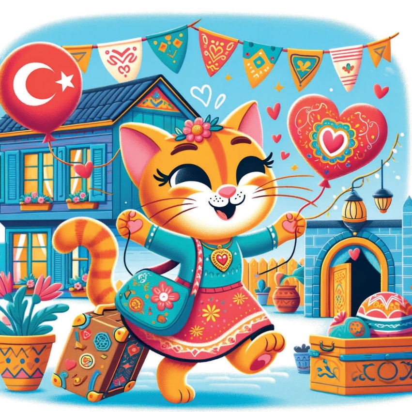
21
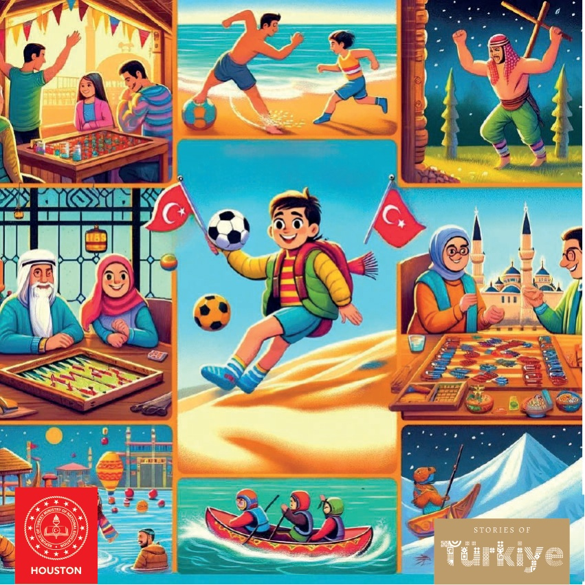
22